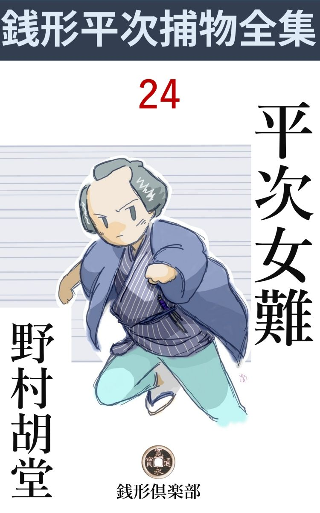
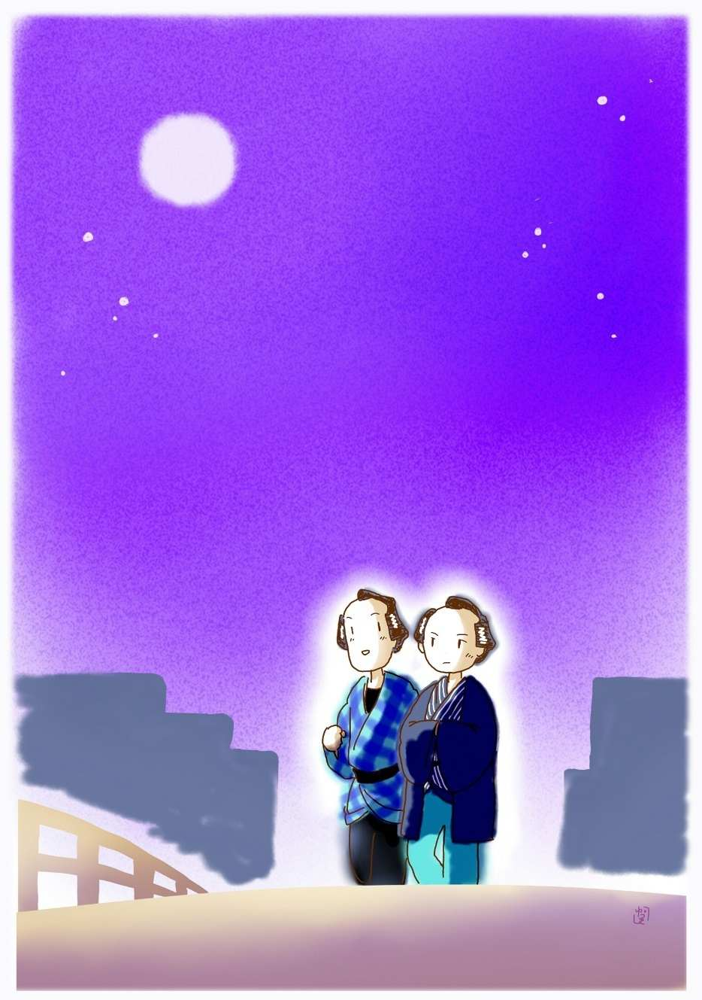

| 平次女難: 銭形平次捕物全集第24話 (銭形倶楽部) | |
| 野村胡堂 | |
| ZENIGATA CLUB (2018) | |

一
「八、良い月だなア」
「何かやりましょうか、親分」
「止してくれ、手前 が塩辛声 を張り上げると、お月様が驚いて顔を隠す」
「おやッ、変な女がいますぜ」
銭形の平次が、子分のガラッ八を伴れて両国橋にかかったのは亥刻 （十時）過ぎ。薄寒いので、九月十三夜の月が中天に懸ると、橋の上にいた月見の客も大方帰って、浜町河岸までは目を遮 る物もなく、唯もうコバルト色の灰を撒いたような美しい夜です。

野暮用で本所からの帰り、橋の中程まで来ると、ガラッ八がこう言って平次の袖を引きました。たいした知恵のある男ではありませんが、眼と耳の良いことはガラッ八の天稟 で、平次のためには、これ程誂 向きのワキ役はなかったのでした。
「あの女か」
「ありゃ身投げですぜ、親分」
「人待ち顔じゃないか、逢引 かも知れないよ」
「逢引が欄干 へ這い上がりゃしません、あッ」
橋の上にションボリ立っていた女、平次とガラッ八に見とがめられたと気が付くと、いきなり欄干を越して、冷たそうな水へザンブと飛込んでしまったのです。
「八、飛込めッ」
「いけねえ、親分、自慢じゃねえが、あっし は徳利 だ」
「馬鹿野郎、着物の番でもするがいい」
そういううちにパラリと着物を脱ぎ捨てた平次、何の躊躇 もなく、パッと冷たそうな川へ飛込んでしまいました。
女は一度沈んで浮かんだところを、橋の下にやって来た月見船が漕 ぎ寄せ、何をあわてたか櫂 を振上げましたが、気が付いたと見えて、水の中の平次と力を併 せ、身投女を、舷 に引揚げました。
女は激動のために正体もありませんが、幸いたいして水は呑んでいない様子、月見船の客は船頭と力を併せて、濡れた着物を脱がせて、船頭の半纏 や、客の羽織などを着せて、擦 ったり叩いたり、いろいろ介抱に手を尽していると、どうやらこうやら元気を持ち直します。
蒼い月の光に照されたところを見ると、年の頃は二十二三、少しふけてはおりますが、素晴らしい容色 です。
「どうだい、気分は。少しは落着いたか、何だってそんな無分別な事をするんだ」
平次は素っ裸のままで、女を介抱しております。近間にいる月見船が二三隻 、この騒ぎに寄って来ましたが、無事に救い上げられた様子を見ると、この頃の町人は『事勿れ主義』に徹底 して、別段口をきく者もありません。
「有難う御座います」
顔を挙げた女、平次はそれを正面から眺めて、どうやら見覚えがあるような気がしてなりません。
「違ったら謝 るが、お前さんは、お楽といやしないか」
「えッ？」
女はもう一度心を取直して、橋間 の月に平次の顔をすかしました。
「ね、やっぱりお楽だろう？」
「あッ、銭形の親分、面目 ない」
女は毛氈 の上へ身を投げかけるように、消えも入りたい風情です。男の羽織と半纏を引掛けた浅ましい姿がたまらなく恥かしかったのでしょう。
「銭形の親分さんで、------これは良い方にお目にかかりました。私は長谷川町で小さな質屋をしている笹屋 の源助という者で御座います。身分不相応な贅 で、生意気にお月様などを眺めながら、十七文字を揃えていると、いきなり鼻の先へ人間が降る騒ぎでしょう、全く、こんなに驚いたことはありません」
成程、俳諧 の一つ位は捻 りそうな、質屋の亭主にしては、肌合の粋 な男。銭形の平次と聞いて、いくらか冷静さを取戻したものか、身投女の後ろから、こんな事を言っております。長谷川町の笹屋というと、新しいながら相当繁昌する店で、商売柄平次も満更知らないところではありません。
「お蔭で人一人助けました、飛んだ功徳 でしたよ」
と平次。
「功徳には違いありませんが、町人はこんな時は何の役にも立ちません」
「ところで、お楽、お前のような女が、なんだって又身を投げる気になったんだ」
平次は質屋の亭主にはかまわず、船を両国の方へ漕 がせながら、漸く心持が落着いたらしいお楽に話しかけました。
「何も洒落 や道楽に死ぬ気になったんじゃありません、親分、お怨 み申しますよ」
「何？」
「兄の香三郎が、親分の縄に掛って、伝馬町に送られてから、世間の人は私を相手にしてくれません」
「------」
「兄は泥棒かも知れませんが、妹の私は何にも知りゃしません。それを町内の構者に して、厄病 神 のように追払ったのは、何という訳の解らない人達でしょう」
「------」
「大泥棒の妹と知れると、どこでも三日と置いてはくれません。三月の間に五軒も越して歩いて少しばかりの貯 えも費い果し、身でも投げなきゃア、乞食をするより外に身の振り方の工夫もつかなかったのです。親分やお上を怨 んじゃ悪いでしょうか」
平次も驚きました。その頃江戸中を騒がせた三人組の大泥棒のうち、一人は逃げ、一人は死に、香三郎というのだけ捕ったのを、今年中の大手柄にしていると、何時の間にやら、こんな飛んでもないところに罪を作っていたのでした。
「そいつは気の毒だ。岡っ引だって鬼や蛇 じゃねえ、早くそういって来さえすれば、何とかお前一人の身の振方 位考えてやったのに------」
「親分、そういって下さると嬉しいけれど、私はどうせ大泥棒の妹だから」
「そうひがん じゃいけねえ、お前の身の立つように、及ばずながら何とか工夫をしてやろう。もう死ぬなんて、つまらねえ心持は起しちゃならねえよ」
「------」
お楽は泣いておりました。
「親分、土左衛門はどうしました」
軽舸 で摺れ違ったのは八五郎でした。河へ飛込んだ親分の身を案じて、西両国の橋番所に駈け付けると、船を出して貰って現場------橋の下------へ漕がせたのです。
「八か、何て口をきくんだ」
「それじゃお土左 」
「馬鹿ッ」
こんな他愛 のない掛合いが、船の中の空気をすっかり柔 げてくれました。
「親分、寒かったでしょうね、------その女は橋番所に引渡して大急ぎで帰りましょう。姐御は一本付けて待ってますぜ」
「この人を伴れて帰るんだ、駕籠をそういってくれ」
「へエ------、お土左を？ 物好きだねえ」
「つまらねえ事をいうな、------笹屋の旦那、それじゃこの女は あっし が引取って参ります。とんだお世話になりました」
二
平次がお楽を伴れ込んだのを見ると、女房のお静は悪い顔をするどころか、自分の親身 の姉が、久し振りで里に帰ったように、何の隔 てもなく受け容れてくれました。
まだ厄 を越したばかり、若くて美しくて、気立てのいいお静は、気の毒なほど下手 に出て、綺麗で年上で、何となく押の強いお楽を立ててやったのです。
翌る日。
「この辺へ商売用で来ました、序 と言っちゃ済みませんが、昨夜は親分の御世話になりましたのでお礼かたがた伺いました------」
そんな事を言って、笹屋の主人源助が手土産を持って顔を出しました。
「とんでもない、あっし こそお礼に上がらなきゃアならないところで」
平次はあいそよく迎えて、何くれとなく話しました。平次よりは幾つか年上でしょうが、世故 にも長 け、文筆にも明るい様子で、この頃の質屋の亭主には、全く珍らしい人柄でした。
馬が合うというものか、二人はすっかり話し込んで、お静の着替を借りて着たお楽を相手に、到頭日の暮れるまで長話をしてしまったものです。
それから源助はチョクチョク訪ねて来ました。平次が留守だと、お楽やお静や、ガラッ八を相手に冗談口をきいて帰ることもあります。
「ありゃ何だい、質屋の亭主だっていうが、野 幇間 だか、俳諧師 だか解ったものじゃない。あんな物 識 顔 をする野郎は俺は嫌いさ」
ガラッ八は、蔭へ廻るとこんな事をいいますが、面と向うと、まことにだらしなく引込んでしまいます。物識と通人は、ガラッ八にとっては一番の苦手だったのです。
もう一人、お楽と源助を嫌いな人間がありました。
それは、ツイ二軒置いて隣に住んでいる、駄菓子屋の娘お町。お静と一緒に水茶屋に出ていて、平次に気があったのですが、張合って綺麗に敗 けて、今でも両国の水茶屋に通って、女だてらに大酒を飲んで、男から男へと渡って歩くようなだらしのない生活を続けているのでした。
「八さん、お寄りよ。知らん顔をして通ると、この間、私を口説 いたことを町内へ触れて歩くよ」
「あッ、お町か、敵 わねえな？」
ガラッ八はそう言いながらも、悪い心持がしないらしく、縁台に腰をおろして、お町がくんでくれた温 い茶を啜 ります。
「ね、八さん、あの女はどこの化物さ。平次親分のところへ入り込んで、近頃はお静さんを使い廻しているッてえじゃないか」
「俺が、そんな事を知るものか。いずれ田舎の従妹 とか姪 とかいうんだろう」
ガラッ八は当らず触 らずの事を言っております。
「近所にあんなのがいちゃ癪 にさわるねえ。お静さんもお静さんじゃないか、何だって又黙って眺めているんだろう」
「そこがお静さんのいいところさ、お前とは少しばかり出来合が違う」
「何だとえ、もう一度いって御覧」
「何遍 でもいうよ、お静さんのあのポーッとしたところを親分が気に入ったんだ。そういっちゃ済まねえが、お町のようにピンシャンしてちゃ、親分の気に入るわけはねえ」
「畜生ッ、何とでも言うがいい。------ところで、あのお楽とかいう女は、どうだい」
お町はこう言われてもたいして腹を立てる様子もなく、お楽のことを根ほり葉ほり聞きたがっております。
「あのお楽ときた日には大変さ。唯もうネットリして、膠 でねって、鳥黐 でこねて、味噌で味を付けたようだよ」
「嫌だねえ、万一お静さんから親分を横奪りするような事があったら、このお町さんが生かしちゃ置かないって、そう言っておくれ」
「少し物騒だね」
「何が物騒さ、あんな女に町内を荒らされる方がよっ程物騒じゃないか」
お町はそういった女でした。お静と平次が一緒になると、ゲームに負けたような心持で、一旦綺麗に引下がっては見たものの、横合から変なのが飛出して、平次へちょっかい を出しているのを見ると、自分がいさぎよく引下がっただけに、打ち殺してもしまいたいような、言いようのない衝動を感ずる------といった性 の女だったのです。
三
四五日は無事に過ぎました。
お静は相変らずまめに立働いて、何の蔭もないように暮しておりますが、気を付けて見ると、呆然 して溜息 を吐くといったような様子が、ちょいちょい平次にも見られるようになって来ました。
お楽はガラッ八がいったように、少しねっとりしておりますが、奉公人のように、よく働いております。妾 、旅芸人といった過去はあるにしても、平次やお静の親切な仕向に折れたのでしょう。見たところ、綺麗で、才走 って、身だしなみがよくて、知らないものが見たら、こちらが平次の女房で、お静を妹とでも思うことでしょう。
「ね、お前さん、ちょいと」
或る日、お楽の留守を見定めて、お静は物蔭に平次を呼び入れました。
「何だえ、誰も聞いちゃいない、用事があるならそこで話せ」
平次は少し面倒臭そうでした。
「私、こんな事はいうまいと思ったけれど、気味が悪くて、どうにも我慢がならない。お願いだから、お金か何かやってお楽さんを外 へ預けて下さいません？」
「何？」
予想外なお静の言葉に、平次は眼を瞠 りました。
「------出て貰ったって、その日に困らせるような事さえしなければ、義理は済むじゃありませんか、お願いですから」
「お前妬 いてるのか」
「あれ、そんな事じゃありません。近頃私はこの儘ジッとしていると、殺されそうな気がしてならないんです」
「------」
「昨夜 裏の井戸で水を汲 んでいると、いきなり私の足をさらったものがあるじゃありませんか。井桁 につかまって、井戸へ落ちるのだけは助かりましたが、気が付いて見ると、水を汲む時立つ場所へ、縄で罠 を仕掛けて置いて、梁 を通して、縄の端を向うから引くようにしてあったんです。誰が引いたか解らないといえばそれまでですが、この辺に私を殺す気の人がいるには間違いありません」
「------」
「それから、今朝は物置に入っていると、外から戸を締めて、輪 鍵 をかけて心 張 をした上、炭俵へ火を点 けた者があります。幸い気が付いて戸を押倒して飛出し、炭俵の火が軒へ移りかけたのを、天水桶から水を汲み出して消しましたが、この様子だと、これからもどんな事をされるか解りません。お町さんに聞くと、二三日前にもお楽さんは、わざわざ両国の薬屋まで行って、何か買っているから、そっと後から跟 いて行って見ると、石見 銀山 の鼠取り薬だったそうです、------どこでいつ使うか解らないから用心するがいい、狙 われているのは鼠じゃなかろう------お町さんはそういってくれました」
「------」
お静の言うのはもっともでした。二度も三度も、明 かに自分の命を狙 う者の細工を見せられては、どんな義理があるにしても、この上素姓の怪しいお楽を、同じ屋根の下には置きたくなかったのです。気の弱い、物優しいお静が、思い切ってこう言うのですから、それは本当によくよくの思いだったのでしょう。
「お静」
「ハイ」
「お前は、俺がお上から十手捕縄を預かる身分と知って嫁に来た筈だな」
「------」
平次の言葉は以ての外でした。嫁入ってから半歳あまり、ツイ荒い言葉も聞いたことのないお静は、あまりの事に仰天して、平次の憤怒 とも、疑惑ともつかぬ顔を見上げました。お静は息の詰まるような心持だったのです。
「縛られたり、打たれたり、顔へ怪我をしてさえ、一言も泣き言をいわなかったお前が、それ位のことで、お楽を追い出せとは何ということだ。やはり嫉妬 と言われても文句はあるまい------いや、言訳は聞かない。身まで投げる気になったお楽を助けて、それが気に入らないというような女房は、俺の方でも考え直さなきゃアなるまい。お上の御用を勤めている身体には、いつどんな用事があるかも知れないのに、一々嫉妬がましい事を言われちゃ、御用が勤まらないというものだ」
「あれ、そんな積りじゃ」
「黙ってお袋 のところへ帰ってくれ。長いことは言わない、十日経たないうちに、何とか言ってやろう。兎に角お前がここにいちゃ、ろくな事がなさそうだ。手廻りの荷物だけ纏 めて、後と言わずに、今直ぐ行ってくれ。三行半 をやるか、迎えの人をやるか、それはもう少し考えてからの事だ------無分別なことをするな」
「お前さん、そんな、そんな、------私はそんな積りで言ったんじゃありません。堪忍して下さい、死んでも私はここを動きません」
お静はあまりの事に顚倒 して、平次の膝に縋 り付くと、赤ん坊のようにイヤイヤをしながら泣きました。もう二十歳 にもなって、大 丸髷 の赤い手 柄 がおかしい位なお静が、平常 可愛がられ過ぎて来たにしても、これは又あまりに他愛 がありません。
「お静、見っともない、いい出した事を変替 する俺じゃない。兎も角お袋の所へ行って、五日なり十日なり、俺の考えの決まるのを待つがいい」
「否、否、私は否、どんなことがあっても、ここを動きゃしません。ね、私が悪かったら堪忍して下さい」
「馬鹿ッ」
「堪忍して下さい、お願い」
お静は平次の膝 から胸へ、首にすがりついて、たった三つになる子供のように泣くのでした。
少し下脹 れの可愛らしい顔が涙に濡 れて、紅い唇のワナワナと顫 ういじらしさは、どんな剛情な平次も、折れるだろうと思われましたが、頑固 に眼を閉じた平次は、それをむしり取るようにもぎ離して、
「八、ガラッ八はいないか」
縁側の方へ声を掛けるのでした。
「オーイ」
ノソリと立ったガラッ八も、拳固 で切 りと涙を拭いております。
「気の毒だがお静をお袋のところへ連れて行ってくれ。十日経ったら、改めて平次が伺いますって、いいか」
「御免 蒙 ろう」
「何だと？」
「そんな使は御免蒙ろうよ」
「馬鹿ッ、突っ立って物を言う奴があるか」
「立とうと坐ろうと勝手だ。こんな貞女 を追い出して、あの雌 猫 の化けたような女と一緒になる積りだろう。そんな野郎はもう親分でも子分でもねえ」
「野郎と言ったな。馬鹿ッ」
「馬鹿の親分は野郎で沢山だ」
「畜生ッ、言やがったな」
平次は思わず煙草盆を持って立上りました。
「あれッ、八さん、お前さんの方が引込んでいてくれなきゃア、------どうせ私が悪いんだから」
お静は二人の間に割って入りました。
四
「親分、可哀相じゃありませんか、お静さんは泣きながら行きましたよ。私は丁度横町で、バッタリ出会わすと、お静さんを劬 め劬め行った八さんが、往来で私を捕まえて、そりゃ変な事ばかり言うんですもの、間の悪さといったら」
お楽はそう言って銚子を取上げました。お静が出かけた後、邪魔する者もない心持で、晩酌 の相手までしていたのです。
「お前が来てから、お静の調子がすっかり変ったのさ。気の毒だが、御用聞の平次に、妬 く女房があっちゃお上 の御用が勤まらねえ」
「でもねえ、あんなに騒がれて一緒になった二人じゃありませんか。私なんか、遠くから見ていてどんなに羨 ましかったことか」
お楽はそう言って、丸い顎 を襟に埋めました。銚子を持った華奢 な手が少し顫えて、海千山千といった妖婦 肌 の女にしては、変に亢 ぶる感情を押えきれない様子です。
「お前も一つやるかい、お楽」
雫 の滴れそうな猪口 を、お楽は小さく両手で受けてニッコリしました。妙に脂 の乗った艶かしさは、嫌な言葉ですが『ニンマリ笑った』と言うのが一番適当しているでしょう。
お静の着換 には相違ありませんが、お楽が着ると、銘仙も木綿も粋 になるのでした。洗い髪に、赤い赤い唇、猪口に触 るとそのまま酒も紅になりそうな、それは何という官能的な魅惑 でしょう。
「だけど嬉しいねえ、親分とこうしていられるんだから、私はまるで夢のような心持よ」
少し馴々 しい口をきいて、猪口を返す手に思わせぶりな力をこめたりしました。
「つまらない事を言っちゃいけない。ところで、お前にいろいろ聞きたいことがあるが、------言ってくれるだろうね」
と平次。
「親分には命を助けて貰った上、こんなに親切にして頂くんだから何もかも言ってしまいますわ、その代り私の願いも聞いて下さるでしょう？」
お楽は何時の間にやら長火鉢 の向う側から、こちら側へ滑 って、平次の身体にもたれるようにしているのでした。
「それはもう、大抵 の事なら聞くが------」
「有難いわねえ、親分、一体、どんなことをお話すればいいの」
「ほかでもない、半歳前に江戸中を荒した三人組の大泥棒、一人はお前の兄の香三郎で、これは伝馬町の大牢 に入っている。もう一人は蝮 の三平------これは死んだそうだが、------あと一人残った人殺しの房吉、これは頭分で、人の五六人も殺している。一人だけ縄目を脱 れて、今でも人もなげに御府内を荒し廻り、この平次を白痴 にして喜んでいる。俺はこの房吉を縛って、江戸中の人を安心させたいのだよ」
「解りましたワ、親分、思い切って言ってしまいましょう。房吉は名を変えて、今では江戸の真中 に住んで、親分が死んだと思い込んでいる三平と一緒に、相変らず悪事を重ねていますよ」
お楽の手は何時の間にやら平次の腕に巻き付いて、その少しほてった顔は、妙に悩ましく平次の緊張した顔を見上げるのでした。
「それは有難い。房吉、あの人殺しの房吉といわれた野郎と、兄弟分の三平はどこにいる、教えてくれ、お楽」
「その代り私のお願い、------」
「出来ることなら何でも聞く、------房吉はどこだ」
「------」
お楽が何か言おうとした時でした。
「御免下さい」
お勝手の格子が開いて、ソロリと入って来たのは、石原の利助の娘で、平次には日頃恩にもなり、親 しみも持っているお品。親の利助の病中は、その代りに子分共を指図して、十手捕縄を恥 しめなかった女ですから、見たところは弱々しい、出戻りとも思えぬ若くて美しいお品ですが、気象 や才知は、並の男の三人分もあろうという女です。ちょうどこの時、
「親分、今晩は、ちょいとお静さんのお留守見舞よ、入っていい？」
表からは二軒置いて隣に住む、昔のお静の朋輩 お町、それは、無抵抗で優しいお静にだけは兜 を脱 いでおりますが、外の女が平次に指でも差そうとしたら、狂犬 のように喰い付いてやろうという恐ろしい女です。
「あッ、お品さん、------お町もかい」
平次も呆気 にとられました。折角お楽の口から兇賊の住所 を聞出そうとしている矢先に、こんなのに飛込まれては、全くやり切れません。
「お町もか------はひどい でしょう。親分、そのもか が気に入らないよ」
お町は自分の家のように入って来ました。
「弱ったなア」
「弱ったのはお静さんよ。あんな可愛らしいお神さんは江戸中探したって二人とあるものか、お前さんには過ぎものだ。そんな雌 猫 の化けたような脂 ぎった女なんかと見 換 えちゃ罰 が当るよ」、
「お町、口が過ぎるぞ」
「お神酒 は過ぎてるが、口なんか過ぎるものか」
お町は一寸も引きそうにありません、------それどころか、長火鉢の向うへ、女だてらに大 胡坐 をかくと、お楽の手から猪口 をむしり取ります。
「さア、親分注いでおくれ。何をキョトキョトしているのさ、これでもこの雌猫よりはましだよ。お静さんに親分を取られた時は器用にあきらめたが、親分をほかの女に取られるような事があっちゃ、両国の水茶屋の名折れだよ」
平次は苦笑いして立上がりました。後ろにはお品、
「親分、お静さんはお里へ帰ったそうですねえ」
「どこから聞いたんだ、お品さん」
「手紙が来ましたよ、頼むから一と晩親分を見張って下さい------って」
「どれ、その手紙を見せな」
平次はお品の手から手紙を受取りましたが、見覚えのある手蹟 ではありません。
「親分、ここへ泊っても構わないでしょう？」
お品までがこんな事を言います。これはお町と違って、叱ることも追払うことも出来ないだけが、厄介というものでしょう。
「こいつは面白いや。女三人で親分を真中に、睨めっこのお通夜 なんざ洒落たものだね」
お町はすっかり喜んでおります。
「親分、あの話は明日にしましょう」
と、お楽。これも辟易 する柄ではありませんが、さすがにこうなっては、何を切り出すことも出来ません。
「驚いたな、どうも、みんな帰ってくれ。御親切は有難いが、一と晩頑張っていられちゃ、俺がたまらない」
と、平次。
「色男には誰がなるってね、親分、こう新造に騒がれるのも満更悪い心持じゃないだろう」
お町は柱にもたれて太平楽を言っております。
五
銭形の平次もこの晩ほどひどい目に逢わされた事はありません。脂ぎった妖艶なお楽と、鉄火で阿婆 摺 で男のように啖呵 を切るお町と、出戻りとはいっても、美しくて賢 いお品の間に挾まって、一と晩さいなまれ たのです。
朝になると、飛出して一と風呂、お品が拵 えてくれた飯を済ますと、そのままプイと飛出してしまいました。これよりほかには、女難除けの手段 も考えられなかったのです。留守は多分、お品がいいようにやってくれるでしょう。しかし、事件は、その日のうちに急転直下して、凄まじい終局 まで推し進んでしまいました。
その晩、町内の銭湯へ行ったお楽が、容易に帰らないと思っていると、
「あ、人、人殺しッ」
路地の中で大変な騒ぎが始 まりました。
留守番のお品は飛んで出ました。お町が引揚げてしまった後、さすがにお品一人では淋しかったのです。
「何だ何だ」
あっちこっちから人が飛出して来ました。平次の家の近く、通りから少し入った一間の路地、一方は板塀で、一方は表を閉 した貸家、その先が生垣で、共同井戸で、袋路地になっておりますから、日が暮れると滅多に人の通らないところです。
誰か手燭 を持出すと、
「あッ」
皆な潮の引いたように退きました。恐ろしい血潮の中に、若い女が仰向けに倒れているのです。
「平次親分のところにいる人じゃないか」
誰かが言います。
紛 れもなくそれは、お楽の取乱した湯上がり姿に相違なかったのです。
平次は朝から留守、どうする事も出来ません。そのうちに誰が言ってやったか、町役人が見廻り同心を連れてやって来ました。
うしろから顔を出したのは、どうして嗅 ぎ付けたか、三輪 の万七とお神楽 の清吉。お品は『しまった』と思いましたが、今更病中の父親を連れて来るわけにも行かず、一人で気を揉 んでおります。
「旦那、申上げます。殺されたのは、この間から平次のところへ入り込んでいる女で、お楽とか言うそうです。そのために平次は女房のお静を出したって話ですから、いずれ、そんな事で刃物 三昧 になったんじゃ御座いませんか」
万七はすっかり好い心持そうに、お楽の死体を見たり、そこいら中の人に当ったり、目まぐるしく活動しては、合間合間に同心に報告しております。
「刃物は何だ」
「匕首 の細いので御座います、うしろから突いたところをみると、下手人はどうせ女でしょう」
「フーム」
「妙な物を見付けましたよ、旦那、死体の側の血の中にこれが落ちていました」
万七の渡したのを見ると、斑 の入った鼈甲 の櫛 。銀で唐草 を散らした、その頃にしては、この上もなく贅沢な品です。
「これはいい手掛りだ」
と同心。
「心当りの者を聞くと、それほどの品ですから間違いはありません、平次の女房のお静の品なんだそうで------」
「何？ 平次の女房が下手人だというのか」
万七の謎を解いて、同心も驚いた様子です。
「お静が下手人だとは申しませんが、兎に角、この女のために昨夜追出されて、お袋のところへ帰ったそうですから、一応呼出してお訊き下さいまし。こんな人通りのない路地の奥へ入って、どうして櫛 なんか死体のそばへ置いたか、その弁解 さえ立てば、お静の疑いはすぐ晴れます」
「フーム」
どうも万七の言う事は一々皮肉です。
「もう一つこれはたいした事じゃ御座いませんが、念のために申上げておきます。お静は余程口惜 しかったと見えて、今日は朝一度、昼頃一度、平次の家の廻りまで来てウロウロしていたそうです。朝と昼来た位ですから、宵 に来ないってわけは御座いません」
「------」
いよいよ以て万七の舌は毒を含みます。
しかし、同心もすぐに平次の女房に縄を打たせるわけには行きません。念には念を入れて、路地の内外、湯屋での様子、それから平次の家に留守番をしているお品まで調べました。が、お静を呼出して訊くより外には、下手人の見込みも当りも付きそうもないと解 ったのです。
「お静の里というのはこの附近か」
と同心。
「ツいそこで」
「喚 んで来て貰おうか」
同心の許しが出ると、清吉は飛出そうとしました。
六
「どっこい、それには及ばねえよ、お静さんにやましい事があるわけはねえ」
ヌッと顔を出したのは八五郎でした。
「八兄哥 か、銭形の親分も飛んだ掛合 いで気の毒だな」
万七は妙に笑いたいような、泣き出したいようなしかめっ面を見せます。------
「へッへッ、有難いことで、三輪の親分が大層気の毒がっていなすったと、親分へ申しておきましょうよ」
「ところでお静ちゃんはどうなすったえ」
「これもお気の毒みたいな話で、ツイ今しがたまで、おっ母アとあっしを相手に、泣いたり笑ったりしていましたよ」
「本当かい」
「お隣で聞けば解りまさア」
「この櫛 はお静さんのだってね」
万七は動かぬ証拠の積りで、鼈甲 の櫛を見せました。
「お静さんのだったら、どうなるんだ」
「気の毒だが下手人の疑いは免 れっこはねえ」
「へーエ」
「死体のそば、それも血の海の中に落ちていたんだ」
「そうですかい、もう一つ同じ櫛を持っている人があったらどうします、三輪の親分」
「何だと？」
「ちょっと待っておくんなさい」
ガラッ八は飛んで行きましたが、暫くすると、ベロンベロンに酔払ったお町を引っ担ぐようにして伴れて来ました。
「何だって？ あの雌 猫 が殺された？ いい気味だね、明日まで生きていりゃア、私が殺す積りだったよ。あん畜生と一と晩啀 み合ったので、今日は気色が悪くて仕様がないから、店を休んで朝から呑んでいたんだよ」
いやもう滅茶滅茶の機嫌です。
「お町、人一人の命にかかわることだ、しっかりしておくれ。これだ、この櫛はお前のだろう」
ガラッ八は一生懸命でした。万七の手から受取った櫛をお町の朦朧 たる酔眼の前へ持って行きます。
「私のだよ、誰が盗んで行きゃがったんだ」
「確かにお前のだね」
「お静さんと一年前に対 に拵えたんだよ。お静さんのでなきゃア私のさ」
「目印はないかえ」
「そんな物があるものか、針で突いた程の傷も付けないのが自慢だったんだ。誰が一体盗んで行ったんだ」
お町の言うのは嘘らしくもありません。
「いつ盗まれたんだ、出鱈目 を言っちゃならねえよ」
万七は横合から口を出しました。
「出鱈目、チ、畜生、岡っ引じゃあるまいし、お町姐さんが出鱈目を言うかい。櫛は二月前に盗まれたんだ。町奉行所へ届出なかったのが悪きゃア、どうともしやがれ」
お町の大地に崩折れるのを尻目 に、
「八兄哥、お静さんの疑いは晴れたとは言えねえな」
万七はニヤリとします。
「三輪の親分、お静さんは昼からズーッとここへ来るまであっしと話していたんですぜ」
八五郎は少しムッとした様子です。
「一つ穴だ、当 になるものか」
「三輪の、あっし が嘘をついたって言うのかえ」
「誰もそんな事は言わねえよ」
「お町はこの間からお楽の阿魔 を殺すんだって威張っていたが、もう少し訊いてみちゃどうです、え、親分」
「こんな酔っ払いに人間一人殺せるわけはねえ。無駄だよ、八兄哥------」
「じゃどうあっても」
「縄張外で気の毒だが、平次兄哥ではこの調べがむずかしかろう。俺が代ってお静さんの口を割ってやらなきゃアなるまい、どっこい」
三輪の万七はそう言って、お神楽 の清吉を振向きました。何やら目くばせすると、苦い笑いが二人の頬をニヤリと走ります。
「畜生ッ、そんな事をされちゃ銭形の親分の名折れだ、お静さんを調べるなんて、俺が不承知だ」
八五郎は大手を拡 げて立塞がりました。
「馬鹿野郎、奉 っておきゃアいい気になって、手前 達 三下 の知ったこっちゃねえ、黙って引込んでいやがれ」
「何を言やがる、手前 は仲間の誼 みてえ事を知らねえのか、義理も人情もねえ野郎だ。それもお静さんに少しでも疑いがあるなら兎も角、お静さんは、お袋と俺の側を一寸も離れちゃいねえんだぞ」
「うるさいッ」
「金輪際 ここを通すものか」
「役目の表でもか」
「------」
「馬鹿野郎、ドジを通らねえと、手前のようになるとよ、ハッハッハッ」
清吉はこんな洒落 を言いながら、八五郎の胸をドンと突きました。
「野郎、突きゃアがったな」
飛びかかろうとする八五郎。
「騒ぐな、八五郎、話は俺がつけてやる」
うしろからそっと肩に手を置いた者があります。
「何をッ」
振り返ると、八丁堀の旦那、吟味与力筆頭笹野新三郎が、微笑を含 んで立っているのでした。
七
万七とガラッ八の争いの嵩 ずるのを惧 れて、お品がそっと人を走らせ、笹野新三郎に助けを求めたのでした。
調べは又最初からやり直し、何から何まで念入りに繰返しましたが、結局、お楽を殺す動機を持っている者は、お静とお町の二人だけ。落ちていた櫛 は、二人のうち、どっちかの物と決っておりますが、お町は二月前に紛失、お静は昨日落したというだけで、これも水掛論に終りそうです。
お静は到頭喚出されて、お町と一緒に調べられることになりました。騒ぎを聞いて丁度そこへやって来たお静は、その儘下手人の疑いを受けて、皆から冷たい眼で見られなければならなかったのでした。
丁度そこへ、ノッソリと銭形平次が帰って来ました。
「あッ、親分、大変な事になった」
八五郎は飛付きました。万七のそばに引据 えられたお静は、飛付くこともならず涙一杯溜めて、平次の喜び勇む顔を見ております。
「聞いたよ、お楽が殺されて、お静とお町が下手人の疑いを受けているって話だろう、------お蔭で俺には、何もかも解ったような気がする。旦那、御免なさいまし、三輪の親分、御苦労様」
平次はそう言うと、ツカツカと死体のそばに寄り、提灯や手燭の明りで、恐ろしく念入りに調べ始めました。傷口から衣紋 から、その辺の大地まで、平次の眼からは、何一つ逃れようがありません。
「大方見当がつきましたよ、櫛 を見せて下さい、ホウ、これはお静のだ」
「えッ」
ガラッ八はいう迄もなく、お静も、新三郎も、万七までもびっくりしました。自分の女房を致命的な疑いに引入れるような言葉です。
「どの辺に落ちていたんだ、誰が拾った？ もとのように置いて貰おうか、------それで間違いはないね、後で間違ったなんて言われると困るが、何？ 目印が付けてあった？ それは有難い」
平次はそう言ってもう一度櫛を取上げながら続けました。
「この櫛には血が着いていない、誰も拭きゃしませんね、------もっとも一度血の着いた櫛なら、拭いても歯の間に血が残っている筈だが、この櫛にはそんな跡 はない、------血の中に入っていて、血が着かないとすると、この櫛はお楽を殺した時落したんではなくて、後から持って来て、そっと置いて行ったものに違いない。血が乾きかけてから置いたなら、櫛へは血が着かなかったわけで------」
「------」
皆はこの一言ですっかり平次に征服されてしまいました。互いに顔を見合せて、次の言葉を待つばかりです。
「自分の持物を死体のそばへ持って来る者はないから、この下手人はお静でもお町でもありませんよ」
平次は笹野新三郎の方を向いてこう言います。
「------」
皆ホッと溜息 を吐きました。わけてもガラッ八の喜びようというものはありません。
「それから、こんな袋路地の奥へ湯帰りのお楽を連れ込むのは、知っている者でなきゃアならないが、女じゃありません。うしろから突いたから、一応女と思うのももっともだが、女が匕首 を持って向う突きにしたとすると、傷口は上向 く筈だ------第一返り血が大変だから、その辺にウロウロしているとすぐ見つかる」
「------」
「これは、お楽を胸に抱いて、うしろへ手を廻して匕首 を背中に押し当てるように、恐ろしい力で突き下げた傷だ。これなら返り血を浴びる事もなし、傷口が下向きになっているのが何よりの証拠だ。それから、お楽の手の爪の中に紬 の糸屑が、ほんの少しだが入っている、抱き附いて背中を刺された時掻きむしったんだね、紬を着るのは大概 男だ」
「------」
何という明察でしょう。万七は一句もなく首を垂れました。
「一体下手人は誰だ、平次、話して見るがいい、お前には解っているようだが------」
笹野新三郎は耐 え兼ねてこう言いました。
「最初から申しましょう。九月十三夜に、両国橋で私は身投女を救い上げました。これがお楽で、三人組の大泥棒、香三郎の妹で御座います。そばにいた船へ引上げて貰おうとすると、その船の船頭が櫂 を振り上げて私を打とうと構えたのです。幸い月見船が二三艘 いたので、私も命拾いをしましたが、これは唯事ではないと思ったから、そこからお楽を引取って、少し見ていることにしたのです」
「------」
平次の話は奇っ怪でした。調べてみるとお楽は房州生れの河童 で、水で死ぬような女ではありません。兄の仇 を討ちたさ、夫の仕事を手伝う積りで、平次の通るのを知って狂言身投をやり、あわよくば水の中で打ち殺し、やり損じたら、一と芝居打って、平次の家へ入り込み、平次を何とかして亡き者にしようと思ったのでした。
「笹屋源助というのはお楽の亭主で御座います、それは後で解りました」
平次はこう続けます。
------お楽は平次の家へ入り込みましたが、平次に心惹 かれて殺す心が鈍 り、その代りお静を殺そうと計画したのでした。平次はお静危うしと見て、わざと腹を立てた振りをしてお静を母親の許に返し、すぐ様怪しいと睨んだ笹屋源助の身許を探し始めました。これがお楽の亭主だったことは言う迄もありません。
お品を呼出した手紙を、平次が手を廻して笹屋の亭主の書いたものとくらべると、寸分違わぬ同じ筆でした。笹屋の源助は、女房お楽の心 変 りを知って平次と一と晩一緒に置くのを気遣い、お品をおびき出してその番人にしたのです。お町が飛込んで来たのは、これは源助にも予想外だったでしょう。
------笹屋の源助は三人組大泥棒の首領房吉の変名だった事は言う迄もありません。お楽が自分を裏切って、自分と三平の在所 を教えようとしたのを聞いて、始めて殺意を生じ、いよいよ打明けるという今晩、銭湯へ行ったお楽を蹤 けて、この路地に誘 い入れ、いろいろに説き立てたのですが、お楽はすっかり気が変って源助の言う事を聞かなかったので、前から抱き寄せるようにして、隠し持った匕首 で一と突きにしたのです。
「櫛 は、源助がチョイチョイ私の家へ来るうち、何かの役に立てようと思って持って行ったのでしょう。どうかしたら、昨日お静が飛出す時、あわてて落したのを拾ったものかもわかりません」
平次はこう説明して、一度辛 く当ったお静へ、------勘弁しろよ------といった優しい眸 を送りました。お静はもう嬉し泣きに泣いて、それも気の付かない様子です。
「ところでその笹屋の源助というのはどうした、急いで手配しなければなるまい」
と、笹野新三郎。
「それには及びません、あれで御座います」
指す人込みの中から、一人の男、身を翻 して逃げ出そうとするのを、早くも平次の手から飛んだ投げ銭、一枚はその項 を、一枚は背を打ちます。
「あッ」
ひるむところを、どこをどう飛込んだか、親分の気を知ることの早い八五郎は、サッと飛込んでうしろから組付きました。
「これが笹屋の源助か」
笹野新三郎は、物優しくさえ見える縄付を顧 みました。
「そうで御座います、三人組の首領 で、人殺し房吉という、恐ろしい男で御座います」
平次は驕 る色もありません。
「そうと知ったら、逃げるんだった。手前 の話に釣られて、到頭年貢 を納めさせられるよ」
房吉は口惜しそうに歯咬 みをします。
「ガラッ八は最初からお前のそばに付いていたよ、俺の眼の動き一つで、何でも読むのが八五郎の芸だ。逃げた筈の三平も、今頃は捕まっているだろう。それも手配をして置いたよ」
平次は事もなげにこう言います。
「銭形の親分、お前さんはお静さんを捨てちゃならないよ。お静さんを泣かせると、このお町が承知しないから」
酔っ払いのお町はフラフラと立ち上がると、お静の頸っ玉に噛 り付いて、泣き出してしまいました。
（編注）
作品中には、身体の障害や人権にかかわる、差別的な語句や表現が見られますが、本書が成立した当時の時代背景等が現代とは異なる古典的な文学作品でもあり、著者が故人でもありますので、底本のままとしました。ご理解、ご諒承のほどをお願い申し上げます。
著者---野村胡堂
挿絵---萩 柚月 © 2017
初出---「オール讀物」昭和八年十二月号 文藝春秋社
底本---「錢形平次捕物全集」第一巻 河出書房 昭和三十一年五月五日初版
編集・発行 銭形倶楽部